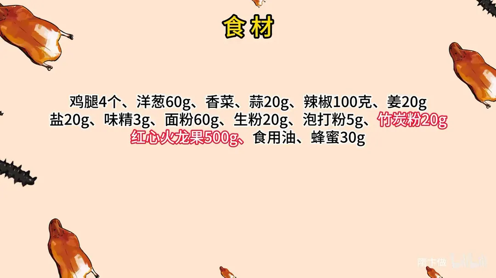
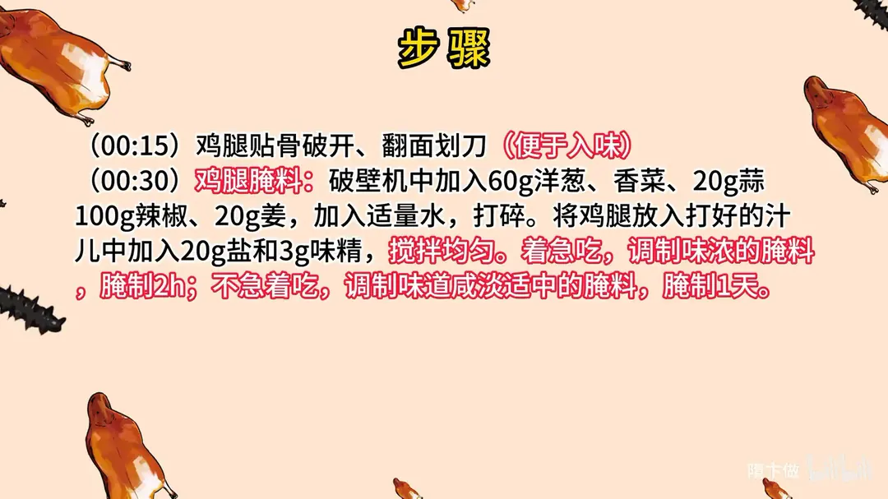
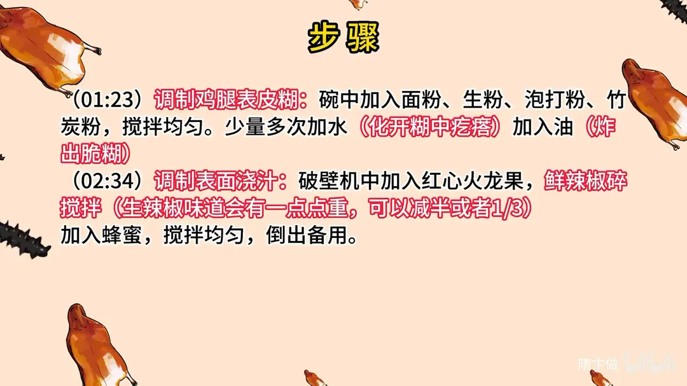
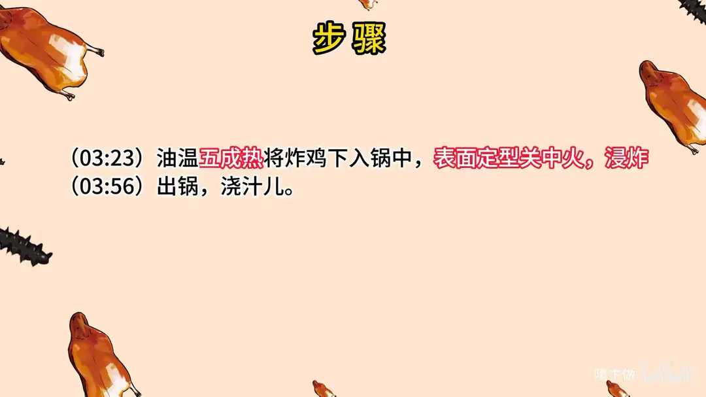

黑粉炸鸡
隋卞一做。鸡腿 4 个贴骨破开划刀，用洋葱、香菜、蒜、辣椒、姜打成的汁加 20g 盐、3g 味精腌 2 小时（味浓版）或 1 天（咸淡适中版）。表皮糊是面粉 60g、生粉 20g、泡打粉 5g 加竹炭粉 20g，调成能炸脆的糊；油温五成热下锅，定型后关中火浸炸，出锅浇红心火龙果汁。
原视频：https://www.bilibili.com/video/BV1EG411Q7gU
食材
鸡腿、洋葱 等 15 样
| 类别 | 用料 | 用量 |
|---|---|---|
| 主料 | 鸡腿 | 4 个 |
| 腌料 | 洋葱 | 60g |
| 腌料 | 香菜 | 适量 |
| 腌料 | 蒜 | 20g |
| 腌料 | 辣椒 | 100g |
| 腌料 | 姜 | 20g |
| 腌料 | 盐 | 20g |
| 腌料 | 味精 | 3g |
| 挂糊 | 面粉 | 60g |
| 挂糊 | 生粉 | 20g |
| 挂糊 | 泡打粉 | 5g |
| 挂糊 | 竹炭粉 | 20g |
| 浇汁 | 红心火龙果 | 500g |
| 浇汁 | 蜂蜜 | 30g |
| 其他 | 食用油 | 适量 |
步骤
- 改刀：鸡腿贴骨破开、翻面划刀，便于入味。
- 打腌料：破壁机中加入 60g 洋葱、香菜、20g 蒜、100g 辣椒、20g 姜，加入适量水，打碎。
- 腌制：将鸡腿放入打好的汁儿中，加入 20g 盐和 3g 味精，搅拌均匀。着急吃就调成味浓的腌料，腌 2 小时；不着急吃就调成咸淡适中的腌料，腌 1 天。
- 调表皮糊：碗中加入面粉、生粉、泡打粉、竹炭粉，搅拌均匀；少量多次加水化开粉中疙瘩，再加油，调成炸出脆糊的糊。
- 调浇汁：破壁机中加入红心火龙果、鲜辣椒碎搅拌，生辣椒味道会有一点重，可以减半或者只放 1/3；加入蜂蜜，搅拌均匀，倒出备用。
- 浸炸：油温五成热，将炸鸡下入锅中，表面定型后关中火，浸炸至熟。
- 出锅浇汁：捞出炸鸡，浇上火龙果汁儿即可。
小贴士
- 不加竹炭粉也会是个好吃的炸鸡。
- 浇的火龙果汁儿里生辣椒味道会有一点点重，可以减半，或者只放 1/3。
讲解要点
难度：★★☆☆☆（糊的稀稠和五成油温最难，黑壳看不出上色，只能靠时间判断）
为什么这么做
- 鸡腿贴骨破开、上面划刀：贴着骨头的地方最厚，破开才腌得进、炸得透。
- 腌料打成汁再腌：洋葱、香菜、蒜、辣椒、姜打成汁才能贴住肉、渗进去，比干撒料均匀；没有破壁机就把料剁碎，加水攥一攥，味差不太多。
- 盐度跟着时间走：着急吃就调咸一点、腌 2 小时；今天腌明天吃就得淡一点、腌一宿，腌久了咸味会攒上来。
- 面粉配生粉、再加泡打粉：面粉给香和厚度，生粉给脆，泡打粉让壳起酥；竹炭粉只管颜色，不调味。
- 粉里少量多次加水、搅开所有疙瘩，最后打油：油跟糊完全融到一起，炸出来才是脆壳，不然是硬壳。
- 先拍一层薄淀粉再蘸糊：干粉打底，糊才挂得住。
- 五成热下锅、定型后关中火浸炸：油温高了外面焦、里面还生；壳是黑的，看不出火色，只能靠竹签扎。
容易翻车
- 糊太稠，壳厚又硬；太稀挂不住。
- 油温过高，外焦里生，黑壳还看不出上色。
- 火龙果汁里的生辣椒放多了，辣味压过果香。
- 鸡腿没腌透，全靠壳上的味撑着。
热评补充
- 试腌料的味道要在放生鸡肉之前调好，别用沾过生鸡肉的筷子尝，避免交叉污染。
原片尾卡




原片文案
AI 字幕校准稿
就不该让小李去我店里边，他就去了一次，看我店里卖的那个黑粉炸鸡，一眼就盯上了。好，今天就教你们。
鸡腿、鸡翅都可以，慢慢地贴着骨头给它破开，便于入味，上面再划一下。里面放上洋葱、香菜、蒜、辣椒、姜，加水，用破壁机给它打碎。家里没有破壁机的，可以用刀把这些料剁一剁，加上水之后拿手攥一攥，味差不太多。
然后倒入鸡腿，放在这个盆里边，把打好的汁倒进去，里面加点盐、加点味精，搅拌均匀。盐度还是老办法：着急吃、口味咸一点，腌两个小时就行了；如果今天腌、明天吃，味一定要淡一点，腌一宿给它腌透。
先来调个糊。面粉差不多，加上生粉，具体的数量不用记，都会放到片尾上。还有泡打粉，对，还有一个竹炭粉——竹炭粉一放，这个性质一下子就变了，忽然就黑了。然后把它搅拌均匀。
外边加水，少量多次，加完水以后更黑了，要不黑能炸黑了吗。要把里面所有的疙瘩都搅开，然后里边打上油，这油是让这个壳酥的，搅拌均匀，油跟那个糊完全融合到一起就可以了，放在旁边醒着。
那咱做一个浇的汁。红心的火龙果倒进去，加上辣椒，切一下，火龙果里面加上辣椒搅拌，再加蜂蜜，倒出来。啥味道？又怪又好吃的那种。
然后把腌过的鸡腿拿出来拍上淀粉，薄薄的一层就行，一会儿蘸那个炸鸡的糊。油大约烧到五成热就可以了。真黑，看黑不黑，看看有多黑。表面定型了之后，关中火稍微浸炸一会儿。
拿竹签扎一下，不冒血水就熟了。把汁浇上去，闻着还是挺香的。给你们看看里面的汁水，看着特别有食欲。
切开里边的鸡肉特别特别嫩，外面那个壳很脆；因为咱们放的料不是那么多，所以鸡肉的香味特别特别足。腌料的具体比例大家一定要记住，都在片尾上，那个味道还是真的非常好的。
火龙果酱跟我想的味道不太一样。我看你加了这些东西，我会觉得很怪，但其实味道还是挺搭的。今天先这样，拜拜。